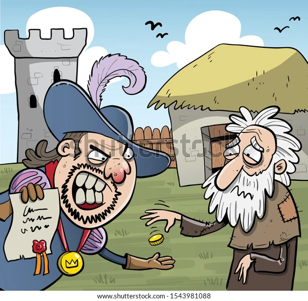
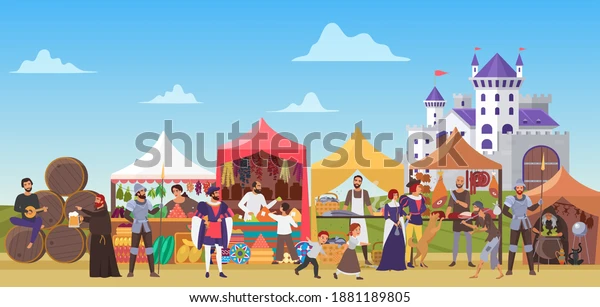
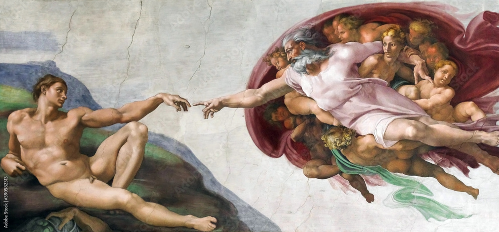

"O feudalismo foi o sistema político, social e econômico que vigorou durante a Idade Média (século V ao século XV). Originou-se após o fim do Império Romano e as invasões bárbaras, quando, em troca de proteção, houve um êxodo urbano, ou seja, as pessoas abandonaram as cidades e migraram para o campo. A sociedade era dividida em estamentos, com pouca possibilidade de ascensão social. Assim, só existia o clero, a nobreza e os servos.
O Feudalismo
O processo de concessão dessas terras obedecia a uma ordem: o rei as concedia aos senhores, e estes, aos cavaleiros e aos servos. Nessa relação, quem concedia as terras era chamado de suserano, e os que as recebiam, de vassalos. O fim do feudalismo se deu quando as relações comerciais começaram a se desenvolver, e, assim, surgiu uma nova classe social: a burguesia. O feudalismo foi substituído pelo capitalismo.
O que é o Feudalismo
Feudalismo era a forma como a sociedade europeia organizava-se política, econômica e socialmente na Idade Média, desde o século V, após o fim do Império Romano, até o século XV, quando começou a ruir, dando lugar ao capitalismo.
Esse sistema econômico, social e político era assentado em relações nas quais os senhores subordinavam vários camponeses — que, em troca, tinham a proteção do feudo e o direito de explorar, na terra do senhor, os produtos necessários para sobreviver — por meio de uma hierárquica dependência."

Origem do Feudalismo
O feudalismo se originou no fim do Império Romano, em 476 d.C., quando, após terem suas terras invadidas pelos bárbaros visigodos e ostrogodos (os godos eram povos germânicos oriundos da região da Escandinávia que se dividiram entre godos do oeste — visigodos — e godos do leste – ostrogodos), os romanos fugiram para o campo e deixaram as cidades (até mesmo Roma, saqueada após o último imperador, Rômulo Augusto, ser destronado depois cinco séculos de império).
Havia também, desde o século III, uma crise econômica que assolava o vasto território dos romanos, que, sem a mão de obra escravizada e com as invasões, buscaram, no campo, meios de sobrevivência e proteção.
A primeira forma que deu origem ao modelo feudal foi o colonato, local onde os servos conseguiam ser abrigados em troca de subserviência aos senhores — guerreiros especializados e, por isso, aptos a oferecerem esse tipo de amparo. Tal processo foi chamado de ruralização e aconteceu em toda a Europa Ocidental, principalmente após o século V, com os reinos germânicos.
Quais são as características do feudalismo?
Vejamos, a seguir, as principais características desse sistema econômico, social e político chamado feudalismo, tido como agrário e estamental.
-
Sociedade feudal
- Clero:
- Nobreza:
- Servos:
- Política feudal
- Economia feudal
Tendo em vista que os servos precisavam pagar impostos pelo uso da terra, são exemplos desses impostos:
-
Banalidades:impostos pagos para utilização de itens de infraestrutura do feudo, como forno, celeiro, moinho etc.
Mão-morta:imposto pago em caso de morte do chefe da família para que a família continuasse na terra.
- Êxodo rural:
- Peste Negra:
- Boom de nascimentos após a peste:
- Crescimento demográfico e surgimento da burguesia:
- Fortalecimento do comércio.
- Questionamento do poderio da Igreja e nobreza.
- Surgimento da fome e dificuldades para gerir questões como saúde e moradia:
- Revolução Burguesa:
- Formulação do absolutismo:
- Formação de cidades mais desenvolvidas:
- Cruzadas (séculos XI e XIII):
- Surgimento do renascimento:
- Mudança das mentalidades:
A característica social do feudalismo é a divisão em estamentos, ou seja, por privilégios ou não dos grupos existentes, que eram:
Igreja, o mais poderoso dos estamentos. Tinha várias terras e controlava também as questões morais e sociais dos outros dois grupos.
reis e senhores feudais, que detinham as terras e a administração das leis, dos benefícios, do comércio e da guerra. O rei não tinha tanto poder, e sim mais prestígio.
tinham o direito de uso da terra, mas pagavam impostos e trabalhavam para os senhores.
A sociedade estamental estabelecia também funções muito bem definidas para cada estamento. Assim, a do nobre era a proteção militar, a do clero era a reza, e a do servo, o trabalho. Apenas o clero tinha o domínio da leitura e da escrita, e mesmo os nobres não tinham luxo; já os servos, muitas vezes, passavam fome.
Apesar de não ser muito dinâmica, a sociedade feudal tinha outros tipos de pessoas, como os vilões, homens livres que habitavam as vilas, porém, eventualmente, prestavam serviços a senhores feudais; ou os ministeriais, que ascendiam socialmente administrando propriedades, podendo chegar à nobreza; ou, ainda, os escravizados (de origem muçulmana), que ficavam por conta dos serviços domésticos.

O rei tinha escassa ou qualquer autoridade, portanto, a qualidade fundamental da política no feudalismo era a descentralização do poder. O monarca, em permuta ao auxílio militar, cedia, frequentemente, amplas extensões de terra aos nobres (senhores feudais). Assim, cada senhor feudal tinha total domínio sobre o seu feudo.
No feudalismo, a economia era agrária, com os servos trabalhando na terra dos senhores em sistema rotativo, ou seja, cultivavam uma parcela dela e depois a outra. Era também uma economia de subsistência, ou seja, voltada apenas para o sustento.

Existiam vários outros pesados impostos, e, além disso, os servos eram obrigados a servir militarmente em caso de guerras e a conceder pouso e hospitalidade ao seu senhor.
Processo de concessão de terras
Durante o feudalismo, o monarca cedia terrenos aos senhores, que, por sua vez, concediam-nos a outros: os cavaleiros, que detinham menos poder e, por isso, guerreavam em sua defesa, e os servos, que trabalhavam nas plantações nas terras dos senhores e pagavam impostos para fazer esse uso da terra. As relações estabelecidas para essas trocas e negociações eram baseadas em juras de fidelidade e obrigações de cada parte.
Crise do feudalismo
Nos séculos XI e XV, o feudalismo entrou em crise. Esse foi o período da Baixa Idade Média, o último desse sistema, antes do advento do capitalismo. Os motivos foram:
os servos passaram a ir (ou fugir) para as cidades depois de se emanciparem comprando suas liberdades.
epidemia de peste bubônica que dizimou 1/3 da população europeia a partir do século XIV. Ocorreu devido às baixas condições de higiene, de maneira geral, no feudalismo. A doença e as mortes fizeram com que a exploração dos servos aumentasse, gerando revoltas e fugas.
fenômeno que foi incentivado para repovoar o continente.
novo grupo constituído de mercadores, banqueiros, artesões e donos de comércios que foi se desenvolvendo dentro dos burgos, as cidades medievais.
pessoas desassistidas estavam sem casa, sem terras e sem comida, gerando também um novo grupo social de miseráveis, que viviam às margens da sociedade e dos burgos.
envolveu aqueles que praticavam o comércio e passaram a desenvolver, também, as primeiras moedas; consequentemente, almejavam um novo sistema econômico, mais dinâmico, com possibilidade de mobilidade social para seu enriquecimento.
modelo político baseado na centralização do poder e no desenvolvimento de instituições com normas e regras bem definidas.
processo feito a partir dos burgos e com base no comércio pujante.
abriram caminhos para o Oriente e o aumento das movimentações mercantis pelo mar Mediterrâneo, sendo também um dos fatores de desenvolvimento do comércio.
fundamental para o fim da Idade Média, inaugurando a Idade Moderna, que questionava, entre outras coisas, a Igreja.

o que levou ao fim do feudalismo e da Idade Média.